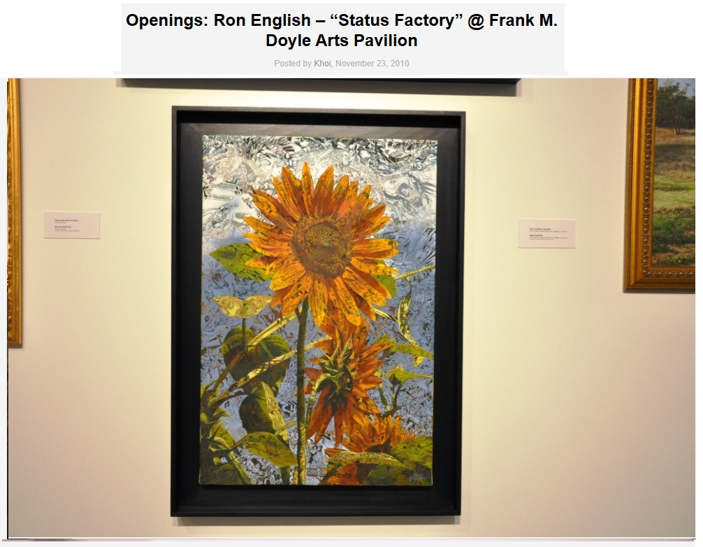
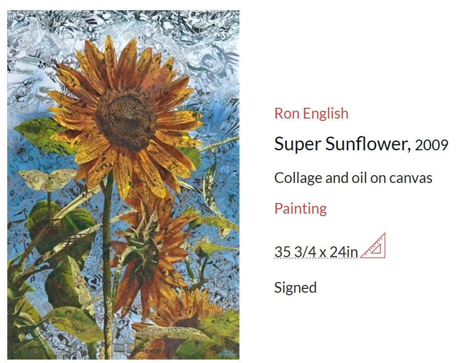

Provenance
Private collection.
Exhibitions
There’s Still Life in Miami, Mauger Modern Art, presented at SCOPE Miami, SOHO Studios, Miami, Florida, US, December 2–6, 2009.
Status Factory – The Art of Ron English, Frank M. Doyle Arts Pavilion (Orange Coast College), Costa Mesa, California, US, November 12–December 17, 2010.
There’s Still Life in Miami, Mauger Modern Art, presented at SCOPE Miami, SOHO Studios, Miami, Florida, US, December 2–6, 2009.
Status Factory – The Art of Ron English, Frank M. Doyle Arts Pavilion (Orange Coast College), Costa Mesa, California, US, November 12–December 17, 2010.
Literature
Ron English, Status Factory: The Art of Ron English (San Francisco: Last Gasp of San Francisco, 2014), p. 176. ISBN 978-0867197891.

Notes
MutualArt lists this work as Super Sunflower, dated 2009, and records it as signed.
The work appears in Arrested Motion’s documentation of Status Factory – The Art of Ron English at the Frank M. Doyle Arts Pavilion.
Arrested Motion’s 2009 preview for Mauger Modern Art’s There’s Still Life at SCOPE Miami includes Ron English among the participating artists.
The work appears in Arrested Motion ’s documentation of Status Factory – The Art of Ron English at the Frank M. Doyle Arts Pavilion.
Ancillary Documentation




Selected Online Circulation
Selected examples of the work’s online circulation, reproduction, or discussion. This list is not exhaustive; it is intended to document representative appearances of the image beyond formal exhibition and publication records.